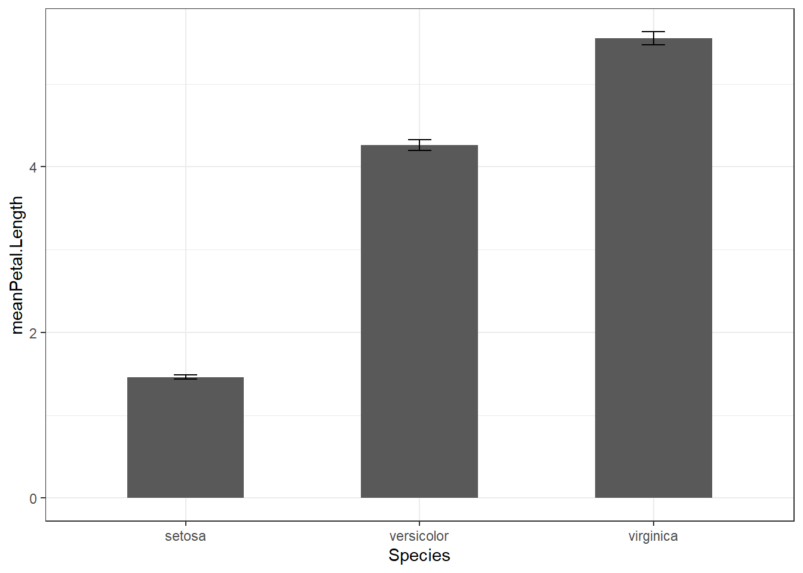
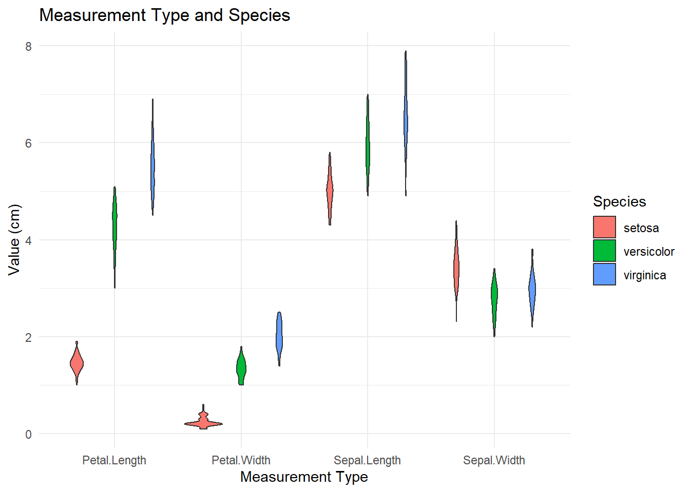

Click here:
Download and save file, and open in R Studio (doesn’t matter if it shows file extension html or rmd, if will be executable as markdown)
library(dplyr)##
## Attaching package: 'dplyr'## The following objects are masked from 'package:stats':
##
## filter, lag## The following objects are masked from 'package:base':
##
## intersect, setdiff, setequal, unionWhy? You may need to add a new category, or transform variables that you would like to analyse, a new variable that is a function of existing ones, or a new set of labels
Let’s try to make a ratio, for example Sepal by Petal Length
newIris <- iris %>%
mutate(ratio_SL_PL = Sepal.Length/Petal.Length)and calculate petal leaf area, which we add directly to the new dataframe:
newIris <- newIris %>%
mutate(Petal.Area = Petal.Length * Petal.Width)newIris <- rename(newIris, Ratio = ratio_SL_PL)NEW name first, then = old name
use “unite” to combine parts of your data (i.e. if you have split colums you’d like to combine: for example: Habitat and season, year/month/day as one date column), example:
df <- unite(df, “nameNEWvariable”, c(variable1, variable2), sep = “_“)
Back to iris data: I want to group the species based on having short or long petals (which here is me arbitrarily defining long = >5 and short anything below 5)
newIris <- newIris %>%
mutate(
Species_PetalLength = paste(Species, ifelse(Petal.Length > 5, "LongPetal", "ShortPetal"), sep = "_")
)May be usieful of you have genus & species names combined in a colum and would like to separate them:
df <- separate(df, combinedVar, c(“Genus”, “species”), sep = “_“, remove = FALSE)
library(tidyr)
newIris <- separate(newIris, Species_PetalLength, c("SpeciesNew", "PL_new"), sep = "_", remove = FALSE)Based on certain criteria, you can “filter” your dataset. Common logical operators that you can use
< less than > greater than == equal to <= less than or equal to >= greater than or equal to != not equal to in.NA = is NA !is.na = is not NA
?Comparison## starting httpd help server ... doneWe can also sample random subsets of your dataframe (for example if your dataframe is massibe and you’d like to explora a small random subset first, or you you’re after resampling for bootstrapping)
Here we sample 100 random rows from the iris dataset, creating a new df (the number of samples needs to be smaller than the samplescontained in your df!):
iris.100 <- sample_n(newIris, 100, replace = FALSE)Or you select the higest value (say top 3 in Petal.Area)
iris.top <- top_n(newIris, 3, Petal.Area)df.distinct <- distinct(df)
iris.distinct <- distinct(newIris)IrisReduced <- select(newIris, Species, Petal.Area, PL_new)There’s a lot we can select,see ?select
for example we want a df that only contains information on something that is specified in the names of the columns, using Petals and sepals here:
IrisPetalOnly <- select(newIris, contains("Petal"))
IrisSepalOnly <- select(newIris, contains("Sepal"))The dataset is clean and manageable now, so we can start exploring. For example we’d like to know how large “large” compared to “short” petals are:
newIris %>%
filter(PL_new == "ShortPetal") %>%
summarise(Mean.PL = mean(Petal.Length))## Mean.PL
## 1 3.007407this would require a separate operation for the LongPetal, OR: use group_by:
newIris %>%
group_by(PL_new) %>%
summarise(Mean.PL = mean(Petal.Length, na.rm = TRUE))## # A tibble: 2 × 2
## PL_new Mean.PL
## <chr> <dbl>
## 1 LongPetal 5.69
## 2 ShortPetal 3.01of course we can do much more than getting means, such as max, min, med, sd, se, IQR, n, …
This links to the ggplot 2 workshop - especially if we’d like to lot values such as means and SEs.
# summary stats required for barchart
iris.barplot <- iris %>%
group_by(Species) %>%
summarise(meanPetal.Length = mean(Petal.Length), SEPetal.Length =
sd(Petal.Length)/sqrt(length(Petal.Length)), lowerErr =(meanPetal.Length -
SEPetal.Length), upperErr = (meanPetal.Length + SEPetal.Length))
iris.barplot## # A tibble: 3 × 5
## Species meanPetal.Length SEPetal.Length lowerErr upperErr
## <fct> <dbl> <dbl> <dbl> <dbl>
## 1 setosa 1.46 0.0246 1.44 1.49
## 2 versicolor 4.26 0.0665 4.19 4.33
## 3 virginica 5.55 0.0780 5.47 5.63library(ggplot2)
ggplot(iris.barplot, aes(x = Species, y = meanPetal.Length)) + geom_col(width
= 0.5) + geom_errorbar(aes(ymin = lowerErr, ymax = upperErr), width = 0.1) +
theme_bw()
You may have measured and recorded different things on the same specimen - they’re now in different datasets, but there’s a “unifying” variable (such as ID number).
Let’s stay with our iris dataset and split it in two, so that we have something to combine! ;-)
setosa <- subset(iris, Species == "setosa")
other <- subset(iris, Species != "setosa")
# Add a common identifier
setosa$ID <- 1:nrow(setosa)
other$ID <- 1:nrow(other)There are many different ways to combine.
Base R: rbind()
Caveat: the order of the columns must match!! It does here so let’s
try
combined_rbind <- rbind(setosa, other)dplyr: bind_rows (order of columns doesn’t strictly matter):
combined_bind_rows <- bind_rows(setosa, other)If we’ve created summary stats and would like to merge them back into our original dataset, let’s create a new Sepal length mean value
meanSL <- newIris %>%
group_by(Species) %>%
summarise(Mean.SL = mean(Sepal.Length, na.rm = TRUE))now let’s merge the new mean
merged_iris <- merge(iris, meanSL, by = "Species")
head(merged_iris)## Species Sepal.Length Sepal.Width Petal.Length Petal.Width Mean.SL
## 1 setosa 5.1 3.5 1.4 0.2 5.006
## 2 setosa 4.9 3.0 1.4 0.2 5.006
## 3 setosa 4.7 3.2 1.3 0.2 5.006
## 4 setosa 4.6 3.1 1.5 0.2 5.006
## 5 setosa 5.0 3.6 1.4 0.2 5.006
## 6 setosa 5.4 3.9 1.7 0.4 5.006This was actually bas R - we can do this with dplyr, too.
For this we’re using “left-join”. This function keeps all rows from the “first” dataframe, and preserves their order. This is particularly useful if you have one “main” dataframe that you’d like to add addional variables to.
merged_dplyr <- iris %>%
left_join(meanSL, by = "Species")Note: For particularly messy data (i.e. many of the IDs not overlapping in both datasets), you can look into
inner_join() this will drop all data where the identifier is not present in both datasets
right_join() like left join, but preserve the second dataframe
full_join() you guessed it - this preserves all data
For some visualisations we may need the change the format of the dataframe.
As we’re sticking with the iris dataset, let’s create a “long” format from the original one, after adding and ID in
irisID <- iris %>%
mutate(Flower_ID = 1:n()) # adding an ID
iris_long <- irisID %>%
pivot_longer(
cols = -c("Species", "Flower_ID"), # Columns to pivot (all except Species and Flower ID)
names_to = "Measurement", # Name of the new column for measurement type
values_to = "Value" #Name of the new column for the measurement value
)lib what could that be useful for?
ggplot(iris_long, aes(x = Measurement, y = Value, fill = Species)) +
geom_violin() +
labs(title = "Measurement Type and Species",
x = "Measurement Type",
y = "Value (cm)",
fill = "Species") +
theme_minimal() The plot combines ALL measurements and shows species by colour; a similar visualisation in the original “iris” dataset would require 3 different plots.
… and finally, let’s practice to get from a long to a wide format:
iris_wide <- iris_long %>%
pivot_wider(
id_cols = c(Species, Flower_ID), # Columns that will remain as identifiers
names_from = Measurement, # Column whose unique values will become new column names
values_from = Value # Column whose values will populate the new columns
)